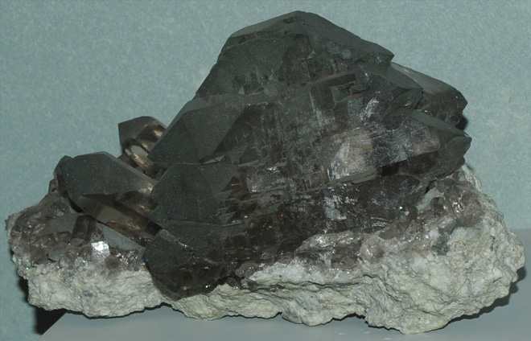

|

| SiO2
These samples of gwendel quartz are displayed in the Smithsonian Museum of Natural History. Gwendel is a variety of quartz , which has the composition SiO2. The sample at left is about 20 cm across and is from Tiefengletscher, Furka, Uri, Switzerland.
|